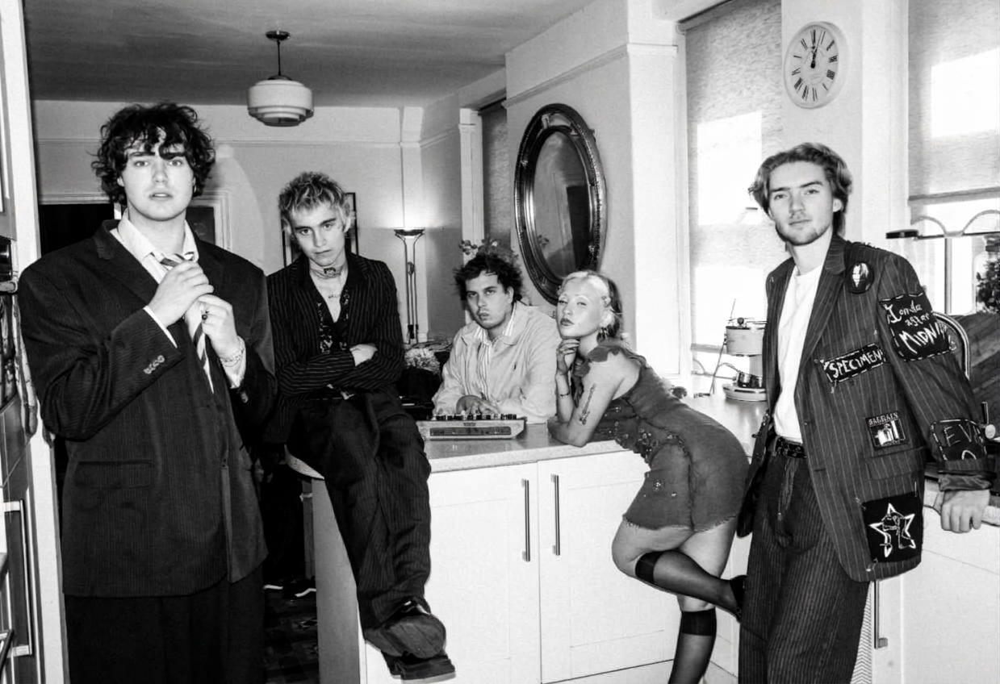
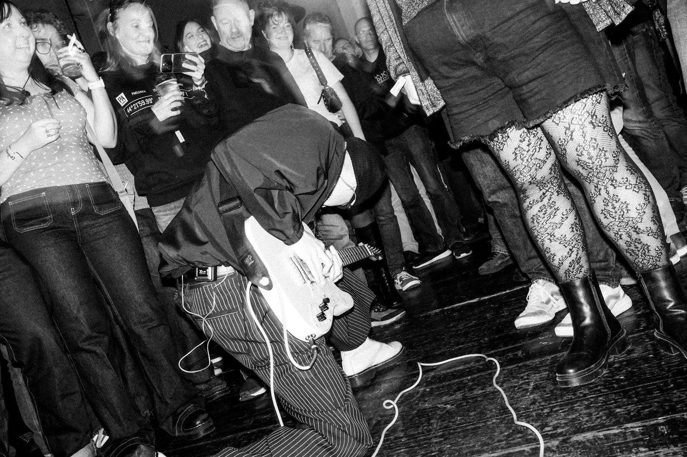
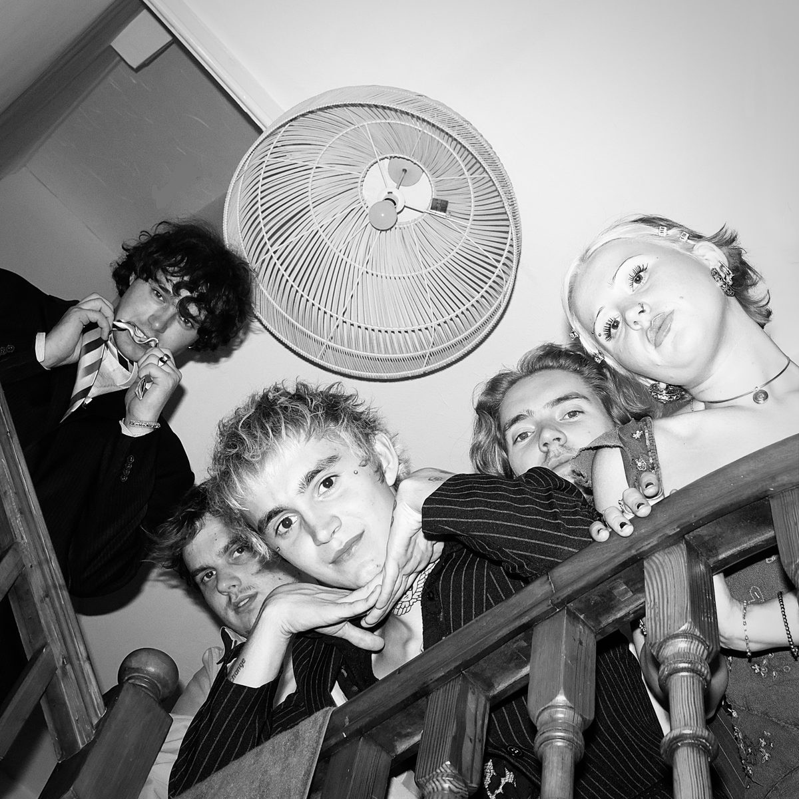
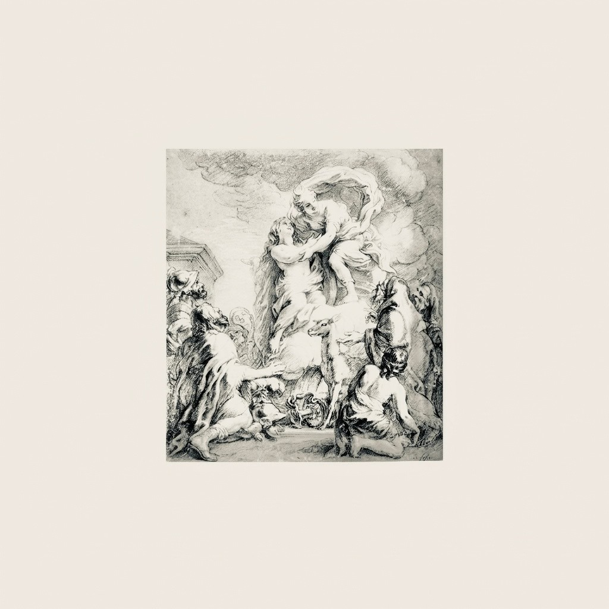
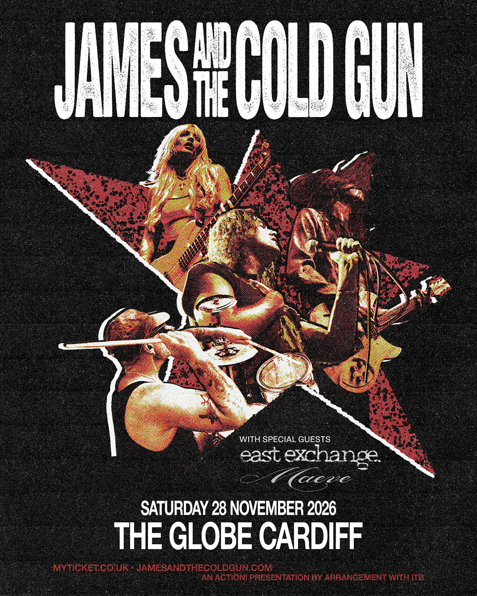

MAEVE release ‘sacrifice’, their second ever single, out now
the south wales six-piece, together since only march of this year, release their new single and celebrate with a show at BBC Introducing LIVE in bridgend on friday 6 november.

MAEVE’s new single ‘sacrifice’ is out now on all streaming platforms, recorded with rockfield producer nick brine (oasis, teenage fanclub, nada surf).

a band established fully in only march of 2026, they have wasted no time playing weekend rumble, shunkfest and orange light festival and selling out venues in newport and cardiff. they then played what stereophone called “one of the most talked-about sets at this year’s sŵn festival”, a packed-out show at tiny rebel in cardiff with crowds spilling out of the venue and out into the stairway just to catch a listen.

‘sacrifice’ goes back to the beginning. it was one of the first songs written by the original three-piece of lewys havard, finlay che williams and brandon watkins, back when the band was a drum machine and a dream. finlay remembers the machine as “so bad, it was kind of good”. the first ideas came on one of the coldest nights of the year, while the band waited for lewys to get back from nottingham.
the song captures the messy, bittersweet reality of being glued to toxicity in an on-and-off relationship. it is haunted by late-night nostalgia trips into despair. “the song is my emotional vulnerability embodied,” says finlay.

the cover draws on the sacrifice of iphigenia, a painting of the classical story of agamemnon and his daughter. it comes from finlay’s long fascination with greek and roman lore, which comes naturally with family ties to caerleon. it suits a song about love turning destructive.
that line-up has grown into six: lewys havard on vocals, finlay che williams on guitar and vocals, brandon watkins on bass, jude price on guitar, daisy jones on synth and jack charles on drums. the band talk about performing as something close to a necessity. “as someone who does struggle with mental health, i find the band and performing — it’s like a drug,” says lewys. “it’s the best addiction you can have,” adds finlay.

friday 6 november: MAEVE play BBC Introducing LIVE’s the sound bridge at black cat, bridgend, with the bug club headlining. doors are at 6pm and MAEVE are on at 8:10pm. an extremely limited run of ‘sacrifice’ on vinyl will be available at the show. tickets via gigantic.
saturday 28 november: MAEVE support james and the cold gun at the globe, cardiff, alongside east exchange. doors are at 6pm. tickets via gigantic.
notes to editors
‘sacrifice’: written by MAEVE, recorded with rockfield producer nick brine. released independently, 2026. running time 5:19. cover art: the sacrifice of iphigenia (public domain).
line-up: lewys havard, finlay che williams, brandon watkins, jude price, daisy jones, jack charles.
photography: @cheye.foto. please credit when used.
MAEVE are a six-piece from south wales. management: sain bureau, info@sainbureau.com